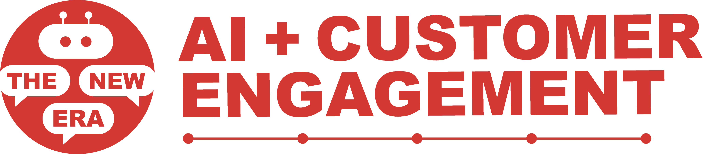

Who Are We?

The Lilly Leadership Institute is a transformative three-year program designed to cultivate exceptional leaders from among Miami University's computing, engineering, and other tech related majors. Through a blend of mentorship from industry professionals and hands-on project experiences, participants develop the essential skills and mindsets to excel as leaders in their chosen fields. The program fosters strategic thinking, collaborative partnerships, effective communication, and the ability to devise innovative solutions to society's most pressing challenges. Cohort 12 of the Lilly Leadership Institute has been focusing on change management for incorporating generative AI into organizations to enhance productivity and impact.